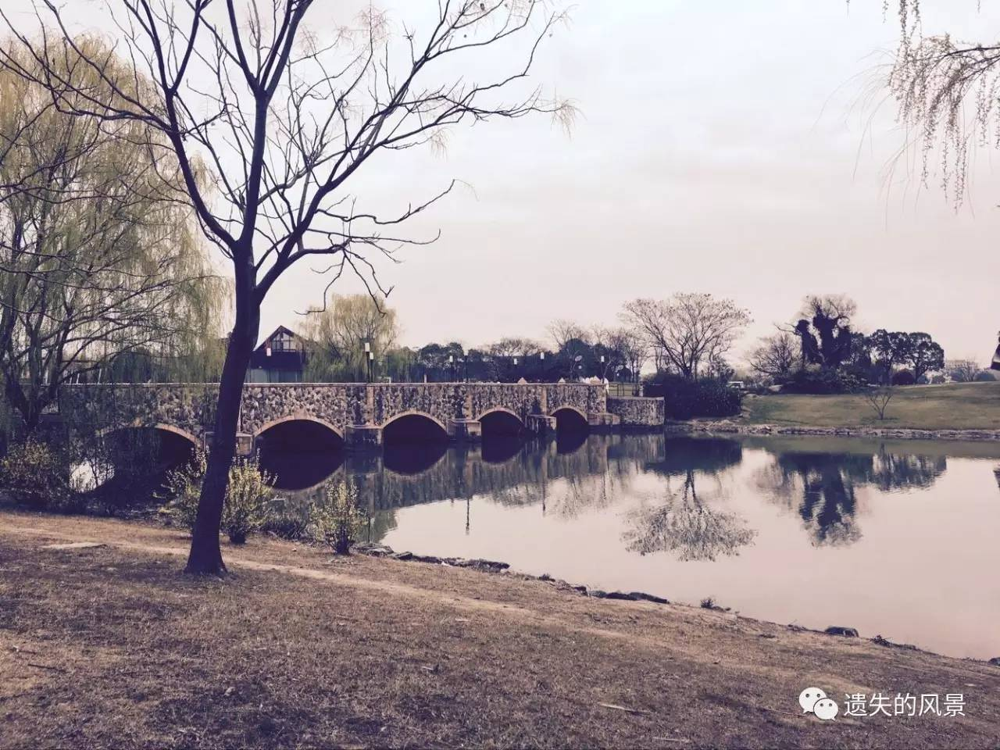

泰晤士小镇，著有婚纱拍摄之地，是上海少有的免费的景点，但是这个免费的景点并不会因为免费，而导致景色打折，今天我就带领大家，一起走进这个松江距上海市区约70公里，颇具英伦风但是却是早于上海的千年古城。
泰晤士小镇融会英伦和东方建筑理念为一体，区域内有天然的湖泊、河流、广场、山丘，甚至还有英式的城堡。

商业区和居住区隔离和融会并存，建在沿湖的高档住宅区温莎半岛别墅群自成一体，而商业区内又混杂着高档的联体别墅。
到泰晤士小镇周边的公交不多，要坐地铁到9号线，松江大学城站下车，出战后做松江15路公交即可（由于公交15分钟来一班较慢，可以考虑打的，需要27元）。
小镇里面是商业社区，里边餐饮场所不是很多，除过几个小资情调的咖啡店外就是商业区内的一些小店。让你体验一下异国风味
在夏季来这边，看着平静的湖水，吹一吹风，发一会呆，未尝不是一种生活方式。

泰晤士小镇永远不会让人迷路的，所以也不用游记攻略，慢慢闲逛，享受那份自在释然。
在小镇里几乎每个角落都有恋人在摄影婚纱，因此这里著有“婚纱之地”的说法，各种美丽的景色，成为了多少新人婚纱照中的风景。
这是一个浪漫的小镇，一个闲适的小镇。